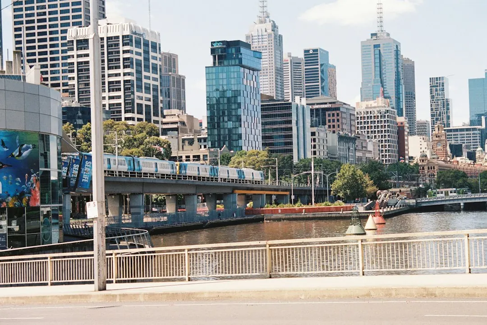

A single-phase switchboard upgrade in Melbourne is typically listed at $800 to $3,500 or more, while three-phase work is typically $3,000 to $5,000 or more. The final price depends on circuit count, existing wiring and project complexity. Older ceramic fuse boards may need replacement, including boards with asbestos backing. A licensed electrician should assess the installation, complete the work and issue a Certificate of Electrical Safety.
For homeowners comparing switchboard replacement melbourne options, the practical decision is whether the existing board, wiring and future electrical plans call for a simple upgrade or more involved work.
Switchboard Replacement Melbourne Explained
Switchboard Upgrades Melbourne describes older Melbourne homes whose boards have not been upgraded since the 1980s or earlier as examples of properties still using ceramic fuse-type equipment. These boards may contain rewireable fuses, have no safety switches and offer little spare capacity for the way households use electricity today.
Useful details to record before requesting a quote include fuses that keep blowing, circuits that trip when a heater and kettle run together, and the absence of RCD protection. The electrician can then inspect the switchboard, wiring and circuits and explain which parts of the installation affect the proposed work.
Some older boards have asbestos backing. The published information says removal and disposal must follow WorkSafe Victoria asbestos rules. A trained electrician may handle a small, sound, non-friable board within strict limits, while other situations require a licensed asbestos removalist. Ask how this issue will be identified, priced and documented before work starts.
Match the work to the property
A single-phase switchboard upgrade is described as a common option for homes. It replaces old fuses with modern circuit breakers and safety switches and can leave room for future circuits. Three-phase work is more involved and may apply to larger homes, workshops or properties with higher-draw appliances. The assessing electrician scopes that work for the individual property.
Planned additions should be included in the first conversation. Solar, a smart meter or new appliances can affect the required board capacity and protection arrangement. Asking about those plans early gives the electrician context when reviewing the existing circuits.
Request a written distinction between a straightforward board replacement and work that also includes changes to wiring, circuit protection, asbestos handling or supply configuration. That description makes separate quotes easier to compare.
Compare protection devices, not labels alone
An RCD safety switch is designed to cut power when it detects current leaking to earth. A circuit breaker is used on individual circuits, while an RCBO combines overload protection and safety-switch protection in one device. The proposed arrangement depends on the board and circuits being assessed.
Ask which circuits will receive safety-switch protection, whether RCBOs are proposed and whether the existing wiring condition could alter the scope. A quote that names the devices and the circuits included is more useful than one that only says modern protection.
For a home considering solar or smart meter work, ask whether the proposed board is compatible with that equipment and whether spare capacity is included. The answer should appear in the scope rather than being left as an assumption for later.
Check the completion and inspection steps
The described process begins with details about the current switchboard, continues with an assessment and quote from a licensed electrician, and ends with completed work and a Certificate of Electrical Safety. The assessment covers the switchboard, wiring and circuits.
Victoria requires a Certificate of Electrical Safety for electrical installation work. The published guidance also describes a main switchboard replacement as prescribed work, with an independent licensed electrical inspector checking it under Energy Safe Victoria's Certificate of Electrical Safety guidelines.
Before accepting a quote, confirm who will perform the work, what certificate will be issued, whether inspection is included and what happens if additional wiring work is identified. Keep the certificate and any inspection information with the property's electrical records.
Use the cost ranges as comparison points
The stated ranges are useful for comparing scope, not a guaranteed final price. A single-phase upgrade is typically listed at $800 to $3,500 or more. A three-phase upgrade is typically listed at $3,000 to $5,000 or more. Circuit count, existing wiring condition, scope and complexity can affect the final quote.
Give each electrician the same information: the current board type, recurring fuse or circuit issues, planned solar or smart meter work, and whether asbestos backing may be present. Photographs can provide preliminary context, but the written quote should identify the work included.
For another view of the same decision, see the Melbourne switchboard replacement guide. Compare the included protection devices, circuit work, asbestos handling, certification and inspection requirements alongside the headline amount.
- Describe the existing board. Record the board type, recurring fuse or circuit issues, missing safety switches and any planned electrical additions.
- Arrange an assessment. Have a licensed electrician inspect the switchboard, wiring and circuits before choosing between single-phase, three-phase or replacement work.
- Compare the scope. Check circuit count, protection devices, asbestos handling, certification, inspection and any wiring work included in each quote.
- Confirm completion documents. Ensure the completed work includes a Certificate of Electrical Safety and clarify the independent inspection pathway where required.
| Situation | Likely discussion | Ask before approval |
|---|---|---|
| Ceramic fuse board | Fuse box replacement with modern protection | Will existing wiring or circuit count affect the quote? |
| Several circuits or future additions | Additional capacity and circuit arrangement | How much spare capacity will remain? |
| Higher-draw appliances or workshop | Possible three-phase assessment | What makes three-phase necessary here? |
| Solar or smart meter planned | Compatibility and modern circuit protection | Will the proposed board support the new equipment? |
Common questions
How much does a single-phase switchboard upgrade in Melbourne cost? The published guide lists a typical range of $800 to $3,500 or more. Circuit count and existing wiring condition affect the final quote.
When might three-phase work be considered? The guide identifies larger homes, workshops and properties with higher-draw appliances as situations that may need three-phase power. An assessing electrician must scope the work.
What is an RCD safety switch? An RCD safety switch is designed to cut power when it detects current leaking to earth. The electrician can explain how it will be arranged across the proposed circuits.
Can an older board have asbestos backing? Some older ceramic fuse-type boards can have asbestos backing. Removal and disposal must follow WorkSafe Victoria asbestos rules, and the handling pathway depends on the board's condition and the work scope.
What certificate should follow the installation work? The published information says a Certificate of Electrical Safety is issued on completion. Main switchboard replacement is described as prescribed work, with an independent licensed electrical inspection also required.
This guide covers switchboard assessment, upgrade pathways, protection devices, asbestos-related questions, cost signals and Victorian completion documentation.